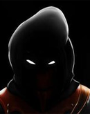
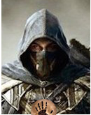

-Да? И сколько ты просишь?
-Да? И сколько ты просишь?
Прогуливаясь по городу, а вместе с тем и тренируясь вы слышите голос из тёмной подворотни.
-Псс...Не хочешь немного информации за золото?
-Да? И сколько ты просишь?
-Всего-то 4 золотых.
-Допустим, вот.
-Волк гонится за серым лисом, но лис не придаёт значения.
-И что это за белеберда? Гони моё золото обратно!
-Глупец! Это очень важно для тебя, но ты не видишь истины в моих словах.
После этой необычной встречи вы направляетесь в дом, но по дороге замечаете странного мужчину, который будто следил за тобой.
-"Чёрт, и что ему нужно от меня?"
Зайдя в подворотню, дабы запутать преследователя, ты готовишься к нападению.
И вот он показался в подворотне. Накинувшись на него всем телом ты пытаешься его допросить.
-Кто ты такой!?
-...
-Молчун значит. Ничего мой кинж...
Твою речь прервал пинок по животу от этого человека.
-Драться так драться.
Таинственный человек расчехлил свой кинжал. Ты тоже достал свой клинок.
Дабы отвлечь его ты метаешь метательный нож в его ногу. Его лицо слегка исказилось от боли, это было видно по глазам и бровям. Но он не отступил